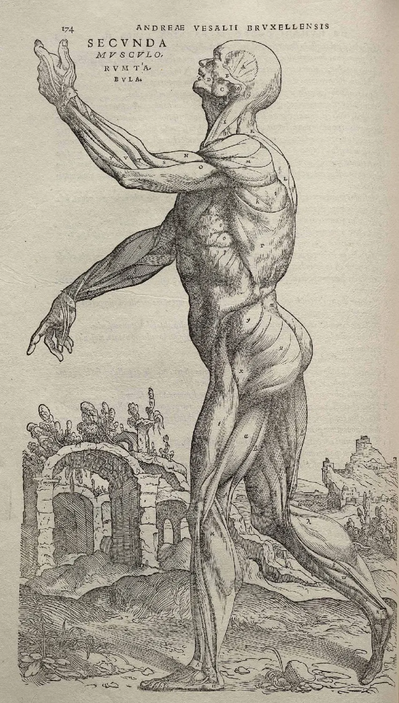
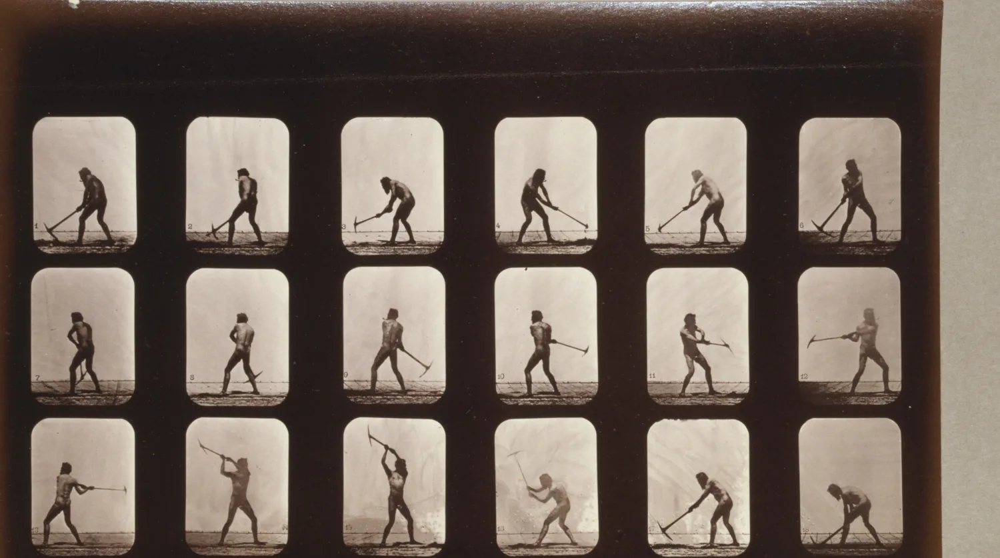
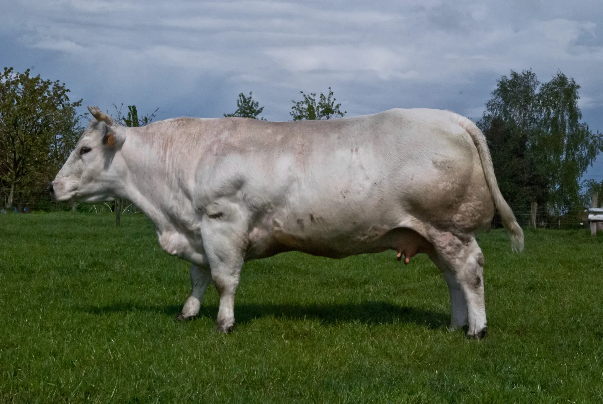
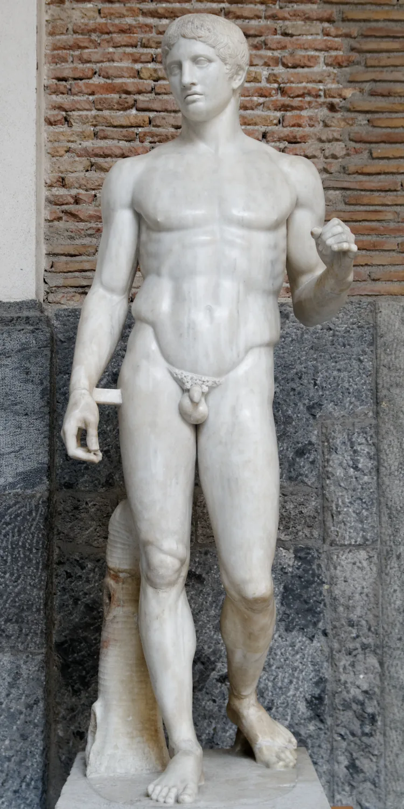

The one-page version
Building muscle is one of the best-understood things in all of health science, and almost none of the real answer is for sale. You need a barbell or a set of weights, enough food, enough sleep, a little sunlight, and one cheap white powder that has been studied for thirty years. That is the entire shopping list. Everything past it is detail, marketing, or the slow, expensive crawl toward a maximum that almost no one actually needs to reach.
This guide makes two arguments at once, and they only sound like they disagree. First: you can get genuinely muscular, near the top of what your genes allow, on a setup so simple it fits on a sticky note. Second: the very last stretch of that climb, the difference between "strong and built" and "competition lean and maxed out," can cost twice the time, twice the effort, and a surprising amount of your health. So the smart target is not the absolute maximum. It is the point where the line goes nearly flat and you walk away with almost all of the prize for almost none of the cost. This guide calls that point big enough.
If you did only these six things, consistently, for two years, you would build most of the muscle you are ever going to build.
That is the whole engine. The chapters that follow are just the manual: why each lever works, how hard to pull it, and the exact point where pulling harder stops paying you back.
The supplement aisle, in one glance
A supermarket of powders exists to convince you that muscle is a purchasing problem. It mostly is not. Here is the honest sort: one thing worth taking, one thing that is optional and oversold, and a long shelf of things you can walk past.
· · ·
Creatine: the one hack
If there were a pill that made you a little stronger, helped you build a little more muscle, sharpened your thinking when you were exhausted, cost about a dime a day, and had thirty years of safety data behind it, you would expect it to be illegal, or at least a secret. It is neither. It is creatine, it sits on the bottom shelf in a plain tub, and it is the closest thing the natural lifter has to a cheat code. Not because the effect is enormous. Because the effect is real, the price is nothing, and the risk is close to zero.
Creatine is not exotic. It is a small molecule your liver already makes and your muscles already store, and you eat about a gram of it a day if you eat meat or fish. Supplementing simply tops the tank up past what food can manage, and a fuller tank does measurable work.
What it actually does, in one diagram
Your muscles run their hardest, fastest efforts on a tiny, instant battery called the phosphocreatine system. When a muscle fires, it spends ATP (the cell's energy coin) and is left holding spent change, ADP. Phosphocreatine immediately hands over a phosphate to turn that ADP back into fresh ATP, in a fraction of a second, faster than any other energy pathway in the body. The more phosphocreatine you have banked, the longer you can keep that instant battery topped up. Supplementing raises the muscle's creatine and phosphocreatine stores by 20 to 40 percent. Kreider 2017 strong
Phosphocreatine donates a phosphate to regenerate ATP almost instantly. A bigger phosphocreatine bank means a couple more good reps before the battery runs flat.
This is also why creatine helps short, powerful efforts (a heavy set, a sprint, a jump) and does almost nothing for a long, steady jog. It is a battery for bursts.
The muscle effect: real, but be honest about the size
Here is where the marketing and the science part ways. Most of creatine's muscle-building power is indirect: by topping up that battery it lets you grind out an extra rep or two and recover a little faster, so you pile up more good training over months. Kreider 2017 Its direct contribution to muscle thickness, isolated from the training, is small, on the order of a fraction of an inch. Burke 2023 strong The training builds the muscle. Creatine just lets you train a bit harder and hold a bit more.
The bars are the extra gain from creatine versus an identical program with a placebo, pooled across meta-analyses. Useful, not transformative.
| Bench +3.2 lb, squat +12.4 lb vs placebo | Kazeminasab 2025 |
| Older adults +3 lb lean mass | Chilibeck 2017 |
The part nobody expects: the brain
Your brain runs on the same energy economy your muscles do, and creatine helps there too, most visibly under stress. The headline result is startling: in 2024, researchers gave sleep-deprived adults a single large dose (about 25 grams, far more than the daily 3 to 5) and watched their cognition partly recover, with processing speed and short-term memory improving for up to nine hours. Gordji-Nejad 2024 good It is one small study using a megadose, not your daily spoonful, so treat it as a striking hint rather than a promise. But one dose producing measurable thinking in tired humans had never been shown before.
It is not just the all-nighter case. A meta-analysis found creatine improves memory, especially in older people and those under stress, Avgerinos 2018 good and newer work hints at a modest anti-depression effect on top of normal treatment. 2025 meta-analysis mixed The brain takes creatine up more grudgingly than muscle, so these benefits likely need the higher end of dosing, and vegetarians gain the most. Roschel 2021
How to take it (the whole protocol is two lines)
Buy plain creatine monohydrate, the original cheap form. Nothing fancier has been shown to beat it; the fancy versions cost more to do the same job. Kreider 2017
- 3 to 5 grams a day, every day. A flat teaspoon; it saturates your muscles in three to four weeks.
- Loading is optional. 20 grams a day for five to seven days fills the tank faster, but reaches the same place. Most people skip it.
- Timing does not matter. Any time, with or without food. Consistency is the only thing that counts.
- Expect 2 to 4 pounds on the scale in week one. Water drawn into the muscle, not fat. A sign it is working.
The myths, retired
· · ·
How muscle actually grows
Muscle is a cost. It is expensive tissue to carry and to feed, and your body will not build a gram of it unless you convince it there is no choice. The way you convince it is by making your muscles produce high tension, over and over, until the only sane response is to come back bigger. Strip away every supplement, every gadget, and every guru, and that single sentence is the whole of hypertrophy.

The signal: tension, not damage
For years people thought you had to "tear the muscle down," and that soreness proved a good workout. That is mostly wrong. The primary signal for growth is mechanical tension: the muscle sensing a heavy load through a full range of motion and converting that strain into "build" signals. Wackerhage 2019 good Damage and the metabolic "burn" are supporting players at most, and chasing soreness just buys fatigue. Bernardez-Vazquez 2022
You deliver that tension with a handful of levers, about six of them. Every one has a sweet spot, and pushing past it costs more than it pays.
Lever one: volume (the big one)
Volume, the total number of hard sets you do per muscle per week, is the lever most tightly tied to growth. The dose-response is real: across studies, each added weekly set bought about 0.37 percent more growth, and groups doing 10 or more sets beat groups doing fewer. Schoenfeld 2017 strong The cleanest single demonstration: trained men doing five sets per exercise grew their quads about three times more than men doing one set (a clear, measurable difference versus almost nothing, in one tightly controlled eight-week study), even though both got similarly stronger. Schoenfeld 2019 good Size is bought with volume. Strength is bought with heavy weight. They are not the same purchase.
But the returns shrink. The newest and largest analysis is honest about this: growth keeps rising as you add volume, with no point where it turns into nothing, but the slope gets gentler and gentler, so each set buys less than the last. Pelland 2026 strong Eventually the fatigue and joint cost of another set outruns the muscle it adds. Lifters call the far end "junk volume," but the truth is gentler: those sets are rarely useless, just a worse and worse trade. How much you actually need is a chapter of its own.
Growth climbs fast through the first ten or so weekly sets, then keeps rising more and more slowly. It does not truly flatten; you just pay more and more for less and less.
The practical band is 10 to 20 hard sets per muscle per week. Beginners start near 10, intermediates push toward 20, and you only climb past that on purpose, watching whether recovery keeps up.
Lever two: load (lighter than you think)
How heavy? For growth, surprisingly flexible: anywhere from about 30 to 85 percent of your one-rep max builds similar muscle, as long as you take the set close to failure. Schoenfeld 2017 strong A hard set of 8 and a hard set of 25 grow about the same. For pure strength, heavy wins clearly. So pick loads that let you train hard without wrecking your joints, and stop worrying that 12-rep sets are "too light to grow."
Lever three: effort (close to failure, not always to it)
You have to train hard, but not to total failure on every set. Pooled trials show going all the way to failure is not better for growth than stopping a rep or two short, and it piles on fatigue that hurts your next session. Refalo 2022 good The sweet spot is leaving 1 to 3 reps in reserve: close enough to trigger nearly all the growth, far enough to keep the tank from running dry. Save true failure for the occasional last set.
The smaller levers
- Frequency. Hitting a muscle about twice a week beats once at the same total volume, Schoenfeld 2016 mostly because two sessions let you do (and recover from) more quality sets. Frequency is really just a way to deliver volume. Pelland 2026 good
- Rest between sets. Longer is better for growth: 2 to 3 minutes beat 1 minute in trained men, because it preserves strength across sets and protects total volume. Schoenfeld 2016 good
- Tempo. Control the lowering (1 to 3 seconds), do not bounce, do not crawl. Super-slow reps just cost you reps. Schoenfeld 2017 good
- Progressive overload. The one non-negotiable: the stimulus has to keep rising. A workout that never gets harder stops building.
The part that happens out of the gym
You do not grow during the workout, you grow during recovery, and the two biggest recovery inputs are sleep and protein. A single night of no sleep cut muscle protein synthesis by about 18 percent and tipped hormones toward breakdown. Lamon 2021 good Seven to nine hours is not optional comfort, it is part of the program.
And the famous "anabolic window," the panic that you must drink protein within thirty minutes of your last rep? A myth: once you account for total daily protein, the timing magic disappears. Schoenfeld 2013 strong The window is hours wide. Hit your daily total and the clock takes care of itself, as the food chapter covers.
· · ·
The exact training
A training program is not magic. It is just a delivery system for the levers in the last chapter: enough hard sets, near enough to failure, often enough, with enough rest, getting a little harder over time. Below is the spine every good program obeys, a template to start on, and the split that grows with you. Pick a plan, run it for months, and change as little as possible. The best progress almost always goes to the person who got bored of a good plan instead of excited about a new one.

The rules every good program obeys
Six numbers that drive all three templates
- 10 to 20 hard sets per muscle per week (start low, build up). Schoenfeld 2017
- Train each muscle about twice a week. Schoenfeld 2016
- Stop most sets at 1 to 3 reps in reserve; true failure only occasionally. Refalo 2022
- Use 6 to 15 reps on most work, heavier low-rep sets on the main lifts. Schoenfeld 2017
- Rest 2 to 3 minutes on compounds, about a minute on small isolation. Schoenfeld 2016
- Add a rep or a little weight most weeks. That is the whole game.
Pick the split that fits your life
The "split" is just how you divide the body across the week. More training days means more days you show up, not more obligation to. All three below hit every muscle about twice a week, so choose the one you can actually sustain.
Each colored cell is a training day. All three hit every muscle about twice a week; they just spread it across 3, 4, or 6 sessions.
More days is not more growth, it is just more room to fit your sets in with good quality. Three honest full-body days beat six half-hearted ones.
Where to start
If you are new, run this three-day full-body plan: you practice the big lifts often and miss nothing if life eats a day. Rotate variations and add a rep or a little weight most weeks. When three days no longer fit your volume, move up to the upper/lower or push/pull/legs layouts above. Schoenfeld 2020
| Each full-body session, 3x a week | Sets × reps |
|---|---|
| Squat or leg press | 3 × 6-10 |
| Bench or machine chest press | 3 × 6-10 |
| Row (barbell or cable) | 3 × 8-12 |
| Overhead press | 2 × 8-12 |
| Romanian deadlift or leg curl | 2 × 8-12 |
| Lat pulldown or pull-up | 2 × 8-12 |
| Biceps curl + triceps extension | 2 × 10-15 |
Form, in one rule and six cues
Good form is not about looking textbook. It is about putting the tension on the muscle instead of the joint, through a full range of motion, so you can keep lifting for decades. The one rule under all of it: full range, controlled, owned weight. If you cannot control it, it is too heavy to build anything but your ego. The cues that matter most, lift by lift:
- Squat: sit down and back until your hip crease drops below your knee, bar stacked over mid-foot, knees tracking over your toes. Depth beats plates.
- Deadlift and Romanian deadlift: push the hips back, not down, keeping the bar dragging close and the back flat. It is a hinge, not a squat.
- Bench press: shoulder blades pinned back and down, a small natural arch, feet driving the floor, bar to the lower chest with elbows near 45 degrees. No bouncing.
- Overhead press: brace and squeeze the glutes so you do not lean back, press straight up, move your head "through the window" as the bar passes.
- Row: flat braced back, pull to the lower ribs by driving the elbows back, full stretch at the bottom. No heaving with the whole body.
- Pull-up and pulldown: start from a full hang, pull the elbows down and back until the chin clears, then lower all the way. No half reps, no kipping.
· · ·
Around the muscle: tendons, mobility, cardio
Three things sit just outside the muscle itself and quietly decide whether you keep training for decades or break down trying: the tendons that bolt muscle to bone, the mobility to move through a full range, and the cardio that keeps the heart able to carry it all. None is glamorous, and each follows the same sweet-spot rule as everything else.
Tendons: the slow tissue
Muscle is the engine; tendons are the cables that bolt it to your bones. The engine is lavishly supplied with blood and rebuilds in days. The cables are starved of blood and rebuild over months, if at all. That mismatch is the most common reason strong, motivated people get hurt: the muscle gets strong enough to pull harder than the tendon is ready for.
Just how slow is tendon? Using carbon-14 left over from Cold War nuclear tests as a built-in date stamp, researchers showed the core collagen of your Achilles tendon is laid down in childhood and then essentially never replaced. Heinemeier 2013 good The cable you train on at forty is largely the one you grew as a teenager.
Early strength gains are mostly your nervous system learning to fire harder, so force climbs in weeks while the tendon is still slowly remodeling. The gap between the two lines is the injury window.
This is why the boring advice (add weight slowly, do not chase a new record every week) is not timidity. It is letting the cable catch up to the engine.
So the protective move is simple and boring: add weight in small, patient steps so the tendon can adapt, and use heavy slow reps and the occasional long isometric hold, both proven tools for cranky tendons over weeks to months. Beyer 2015 Rio 2015 good The lifters still training pain-free in their fifties are almost never the ones who added weight the fastest.
Stretching and mobility
Stretching is one of the most misunderstood habits in fitness. The thing most people do, a long static hold right before they lift, is the one version the evidence is least kind to.
What to actually do: warm up by moving, not holding (leg swings, lunges, light ramp-up sets), which preps you for hard work better than static stretching. Behm 2016 good Train the full range, especially the stretch: a growing line of research finds emphasizing the lengthened part of a movement can match or beat conventional lifting for growth, Pedrosa 2022 Kassiano 2023 mixed so the bottom of a squat is not something to rush, it may be the best part. And stretch for range when you genuinely lack it, just not crammed in before your heaviest set.
Cardio and the heart
Lifting builds the muscle; cardio keeps alive the heart and lungs that carry it. And of every number in this guide, the one most tightly linked to how long you live is not how much you can bench, it is how fit your heart is. In a study of over 120,000 people, those with the lowest cardiorespiratory fitness had about five times the risk of dying as the fittest, with no ceiling: fitter was always better. (Read it as a strong association in a selected population, not a literal head-to-head, but the direction is not subtle.) Mandsager 2018 good
Adjusted risk of death compared with a fit, healthy reference (1.0). Low fitness outweighs every classic risk factor on the chart.
Just 15 minutes of moderate activity a day is linked to 14 percent lower mortality and about three extra years of life. Wen 2011 The minimum effective dose is genuinely tiny.
Will cardio eat your gains? Only if you do a lot of it. Piling heavy endurance work on top of lifting can blunt growth, an effect called interference that scales with dose; running interferes more than cycling, and doing it right before lifting is worst. Wilson 2012 good The fix is easy: two or three moderate sessions a week buys nearly all the health benefit and interferes with almost nothing. Separate it from lifting when you can, and favor low-impact modes (bike, incline walk, rower) if you are protecting your legs for squats.
· · ·
Food is the other 90 percent
Training is the signal to build; food is the raw material it builds with. Send a perfect signal to an empty warehouse and nothing gets made. The good news, again, is how simple the answer is, and how fast it stops paying to do more. Two things matter: eat enough protein, and eat slightly more than you burn. Almost everything else in nutrition is rounding error.
Protein: hit the number, then stop chasing it
Protein is the brick. But there is a clean ceiling on how much helps. Pooling 49 studies and nearly 1,900 people, the benefit of more protein for building muscle flattens out at about 0.7 grams per pound of bodyweight per day. Past that, extra protein adds essentially no extra muscle. Morton 2018 strong (When you are dieting in a calorie deficit, nudging up toward the old "1 gram per pound" rule helps protect muscle, which is the one time the higher number earns its keep.)
Muscle gain climbs with protein up to about 0.7 g/lb/day, then the line goes flat. The protein-shake industry is mostly selling you the flat part.
Spread it across the day, roughly 0.2 grams per pound per meal over 3 to 4 meals, to keep the muscle-building machinery topped up. Schoenfeld 2018
Your protein target
interactiveWhole food beats powder, and you cannot out-supplement a bad diet
Protein powder is not special, just dried convenient groceries. In the studies it helped only to the degree it pushed someone's total daily protein to target, and did nothing once the diet was already adequate. Morton 2018 Eggs, dairy, meat, fish, beans, lentils, tofu, and grains hit the same target and bring vitamins a scoop does not. Powder is a tool for a busy day, not a requirement.
Eat a little more than you burn
To build new tissue you need slightly more energy in than out, and slightly is the key word: a surplus of about 200 to 500 calories a day is plenty, the small end favoring lean gains. Iraki 2019 A bigger surplus mostly just adds fat, with no extra muscle. Helms 2023 good The "dirty bulk" buys a longer, harder diet later and not much more muscle now.
· · ·
The smaller inputs: sun, timing, caffeine
Three more inputs get far more attention than they deserve: the sun on your skin, the hour you train, and the pre-workout in your shaker. One matters more than people think, one matters less, and one you can skip entirely. None of them moves the needle like food and sleep.
Sunlight and vitamin D
One input your body wants comes not from the kitchen but from the sky. Ultraviolet B light hits a cholesterol-like molecule in your skin and physically rearranges it into vitamin D, Holick 2011 a hormone you need for strong bones, working muscles, and a steady mood, and roughly a billion people do not get enough. Sizar 2024 good Food is a poor source, which is exactly why sunlight, or a cheap pill in winter, matters.
A useful rule of thumb is 10 to 30 minutes of midday sun on bare arms and legs, most days, for lighter skin; darker skin and higher latitudes need meaningfully longer, aiming for a blood level of 30 ng/mL or above. The goal is brief and regular, never a burn: too much raises skin-cancer risk for no extra vitamin D, because the skin stops making more once it has enough. The often-hyped link to testosterone, by contrast, is weak and unreliable. Cordeiro 2024
When to train
Your muscles are genuinely a little stronger in the late afternoon and early evening, when core body temperature peaks, worth a few percent on a max effort. Douglas 2021 mixed But over months, morning and evening lifters build the same muscle and strength, and morning bodies adapt to morning training. Grgic 2019 good So the answer that matters: train at the time you will actually keep showing up. The few percent from lifting at 5 PM is dwarfed by the 100 percent you lose on a skipped session. The one caveat: very intense exercise right before bed disturbs some people's sleep.
Caffeine: the one you can skip
Caffeine is the most popular performance drug on Earth, and I never touch it. It works, but barely: at a typical dose it improves endurance power by about 3 percent and strength by low single digits, Southward 2018 Guest 2021 strong and it does nothing for muscle growth directly. Those are real edges if you are racing for a medal, and a rounding error if you are building muscle over years.
Its documented edge is a few percent on acute performance, and almost none of it is muscle growth. Everything that builds muscle is in the other slice.
And that few percent is performance on the day, not muscle at the end of the year. Caffeine has no direct muscle-building effect; any long-term gain is small, indirect (a slightly harder session here and there), and unreliable.
Does a daily user have a lasting edge over someone who never touches it? Not really. Much of a daily user's morning lift is just reversing overnight withdrawal, dragging them back to the baseline a non-user already lives at, James 2005 and a caffeine-naive person responds more strongly on the rare day they do use it. Lara 2019 So keep it as an occasional tool for a genuinely tired day (about 1.5 to 3 mg per pound, an hour before), never a daily crutch, and never late, because it wrecks the sleep that builds you. Skipping it costs almost nothing.
· · ·
Lifting and the brain
If the only payoff from exercise were a better-looking body, it would still be worth it. But the most remarkable benefits happen above the neck. Movement is about the single most effective thing a healthy person can do for their brain, and one of the few interventions that visibly rebuilds brain structure rather than just slowing its decline.
The landmark result is almost hard to believe. Older adults who walked regularly for a year grew their hippocampus (the brain's memory center) by about 2 percent, effectively turning back one to two years of age-related shrinkage, while the control group's brains kept shrinking. Their memory improved alongside it. Erickson 2011 good
Exercise raises BDNF, a protein that acts like fertilizer for brain cells, helping them grow, connect, and survive. A single workout bumps it up; regular training raises your baseline. Szuhany 2015
The everyday version
You do not have to be elderly to collect this. A single bout of exercise reliably sharpens focus and working memory for hours after, which is why a hard morning session leaves your head clearer. 2024 meta-analysis good For low mood the evidence is striking: across a huge umbrella review, physical activity was at least as effective as medication and therapy for mild-to-moderate depression and anxiety (a comparison across separate studies, not a head-to-head). Singh 2023 strong And it is not just a runner's high: lifting improved thinking in older adults with mild cognitive impairment more than a year later, and imaging suggests it protects the hippocampus from shrinking. Mavros / SMART trial Broadhouse 2024 mixed
· · ·
Born different: genes and fibers
Here is the least comfortable truth in this guide, and the most freeing once you accept it. Two people can run the exact same program, eat the same food, sleep the same hours, and end up with wildly different bodies, because much of how you respond to training was decided before you ever touched a weight. Knowing what is fixed and what is not is the difference between training with the genes you have and resenting the ones you do not.
The cleanest evidence is a single, beautiful study. 585 people did the identical 12-week arm program. The change in muscle size ranged from minus 2 percent to plus 59 percent, and strength gains ran from zero to plus 250 percent. Same program. Same effort, as best anyone could control. Completely different bodies. Hubal 2005 good
Each dot is a person. They all did the same training; where they landed was mostly not up to them. A few barely moved. A few exploded. Most clustered around a 19 percent gain.
When researchers sorted lifters by results, they found clean groups: extreme responders grew their fibers about 58 percent, modest responders about 28 percent, and non-responders close to zero, and the big responders started with more muscle stem cells to draw on. Petrella 2008
You are born with your fibers, and you cannot make more
The number of muscle fibers you have is largely set in early life and varies roughly twofold between people, from around four hundred thousand to nine hundred thousand in a single thigh muscle. Lexell 1988 mixed And adult training does not add fibers; making new ones in humans is minimal or unproven. 2024 review When you "build muscle," you enlarge the fibers you were born with. Start with more, and your ceiling is simply higher. It is a lottery you cannot enter twice, so stop comparing: your job is to fill out the hand you were dealt, not the hand of the person next to you.
Fast and slow: the other genetic dial
Your fibers also come in types: slow, fatigue-resistant ones for endurance, and fast, powerful ones for force. The mix is largely inherited and the spread is enormous, from elite sprinters around 80 percent fast to elite distance runners up to 90 percent slow, about half of it genetic and traceable to genes like ACTN3, the so-called "sprint gene." fiber-type review Vincent 2007 mixed You can shift the mix a little, but not rewrite it: some people really were born to lift heavy, others to run far.
The brake, and the people born without it
Muscle has a built-in brake: a protein called myostatin that actively limits how big you get. Break that gene and the limit comes off, which produces some of the most striking creatures in biology. A boy born in 2004 with two broken copies was extraordinarily muscular from birth. Schuelke 2004 The grotesquely muscled Belgian Blue cattle carry the same kind of mutation. McPherron 1997 So do "bully whippets," and remarkably, whippets with just one broken copy are more muscular and race significantly faster. Mosher 2007 mixed

The natural genetic ceiling on muscle is real, and you cannot file it off. Twin studies put the heritability of lean mass and strength somewhere around 50 to 80 percent. Arden 1997 good Your genes hold a lot of the cards.
· · ·
Easy come, easy go (mostly go)
Building muscle is slow. Losing it is fast. That asymmetry sounds cruel, and people use it to justify never missing a workout, but the real picture is far more forgiving, because your muscle keeps a permanent record of having been big before. Once built, you never quite start from zero again.
First the sobering side: with complete immobilization, a cast or a hospital bed, you can lose muscle at around half a percent of its mass per day early on, and strength drains about four times faster than size. Marusic 2021 good But normal life is nothing like a hospital bed. Stopping for a couple of weeks barely touches your strength; real declines show up only after three or four weeks off. Mujika 2000 A vacation will not undo your year.
The same muscle over two years: a long climb, a layoff that drops it faster than it rose, then a return that snaps back far quicker than the first time. The brain of the muscle, its extra nuclei, never left.
When a muscle grows, it gains permanent control centers called myonuclei, and a DNA-level memory of having been trained. Neither is lost when the muscle shrinks, which is why coming back is so much faster than starting out. Bruusgaard 2010 Seaborne 2018
What this means for you
- Missing a week or two is genuinely nothing. Illness, travel, a busy stretch at work: your muscle barely notices. Do not torch your sleep or your sanity to avoid a missed session.
- Coming back is not starting over. Whatever you built once returns faster the second time, thanks to those retained nuclei. The hardest muscle you will ever build is the muscle you have never built before.
- The clock you cannot ignore is age. After about 50, muscle slips away at roughly 1 to 2 percent a year, strength faster still. von Haehling 2010 good Lifting is the one proven brake; the muscle you bank in your thirties and forties is a deposit against the decades your body starts trying to spend it.
· · ·
Diminishing returns, and how much you need
This is the most important chapter in the guide, and the one the fitness industry least wants you to read, because its business depends on selling you the part of the curve that barely moves. In a sentence: your first year of training can build as much muscle as the next four or five combined, and the closer you get to your genetic ceiling, the more obscenely expensive each additional pound becomes. The maximum is real, but the last stretch costs so much time, effort, and health that, for almost everyone, the smart target is not the maximum at all.
The taper is brutal, and it is normal
Every serious coaching model agrees on the shape. A natural male lifter might gain 20 to 25 pounds of muscle in year one, then 10 to 12 in year two, 5 to 6 in year three, and just 2 to 3 in year four, before it slows to a trickle. McDonald Aragon 2009 mixed (Women gain at roughly half these rates, on the same curve.) The total natural ceiling, as a fat-free mass index, sits around 25 for men, a line drug-free athletes essentially never cross. Kouri 1995
Approximate muscle gained each year by a natural male lifter doing everything right. The bars fall off a cliff, and no supplement, program, or amount of trying flattens that fall.
This is not a sign you are doing something wrong. It is the shape of the thing. Lifters who do not understand it quit in year three, convinced they are "broken," when they are simply standing on the flat part of a curve they were never told about.
Play with the curve yourself
Drag the slider to pick how close to your genetic ceiling you want to chase, and watch what it costs. The line is generous early and merciless late.
The cost of the last few percent
drag mePut the pieces together and the case makes itself. The first chunk of progress is cheap and fast; the last is slow, expensive, and, as the next chapter shows, sometimes actively bad for you. Getting to 90 percent of your potential takes a few focused years you would want anyway. The final 10 percent can take as long again, demands a precision that bleeds into the rest of your life, and yields a difference most people never notice. That trade is worth it for a competitive athlete; for everyone else, the point worth aiming at sits below the absolute maximum: strong, lean, capable, visibly built, with your evenings and joints intact. That is what this guide means by big enough.
The maximum is for people who are paid to reach it. Everyone else is better served by the place where the line goes flat.The whole argument, in one sentence
So, how much do you actually need?
Forget the maximum. How much does it actually take to get most of the way there, the 80 to 90 percent a sane person can sustain for life? I had the research torn apart to answer exactly this, with a skeptic told to attack the comfortable answer. Here is what the data say, including the two places it refused to say what I wanted.
| Lever | The sane dose | Of the max | Going to the extreme buys you |
|---|---|---|---|
| Protein | ~0.7 g per pound a day | ~98% | nothing (unless you are dieting lean) |
| Training volume | 10 to 20 hard sets / muscle / week | ~85-95% | a little, and it keeps climbing |
| Effort | stop 1 to 2 reps short of failure | ~95% | barely (failure just adds fatigue) |
| Frequency | each muscle ~2x a week | ~100% | nothing at matched volume |
| Sleep | at least ~7 hours | ~95% | nothing above; under 6 hurts a lot |
| Calorie surplus | +150 to 300 a day | ~100% | mostly fat |
| Time | 3 to 5 years, consistent | ~90% | the years are not optional |
The percentages are honest estimates read off noisy dose-response curves, not figures any one study reports. The effect sizes underneath them are real and cited below. Morton 2018 Tagawa 2021 Pelland 2026 Helms 2023
Read down that table and a pattern jumps out: almost every input is a threshold, not a ladder. You climb fast to a sane dose, capture nearly all the benefit, and the line goes flat. The maximalist eating a gram of protein per pound is not out-growing you at 0.7, he is just spending more: a trial that doubled trained lifters to roughly 1.5 g per pound added zero extra muscle. Morton 2018 strong
Each curve is one input: benefit on the way up, the green dot at the sane dose. Most plateau hard, you get nearly everything, then nothing. The two the data would not let me flatten are marked.
Five of the six flatten: hit the sane dose and the maximalist version next to you is buying nothing. The data refused to flatten two of them, and an honest guide has to say so.
The two the data would not flatten
Volume keeps climbing. This is where my comfortable story broke, so I am keeping the truth instead. The best evidence to date, a 2026 meta-regression, found that more weekly sets keep adding muscle across the entire range studied, with no point where it turns into "junk," just a gentler and gentler slope. Pelland 2026 strong So "you only need ten sets" is too convenient. The honest version: ten hard sets gets the large majority, fifteen to twenty keeps adding a real if shrinking amount, and past twenty you are still buying muscle, just at a worse price in time, fatigue, and joints. Chasing your ceiling is the one place the maximalist is not wasting effort, only paying a premium. (The gift on the flip side: keeping muscle is cheap. Lifters who merely held their volume steady grew as much as those who piled on 30 to 60 percent more sets.) Enes 2024
Sleep is a floor you can fall through. Not "more is better," but "clear the bar or pay." When dieters slept 5.5 hours instead of 8.5, they lost the same weight but 60 percent more of it came from muscle, and 55 percent less from fat. Nedeltcheva 2010 good Past eight or nine hours adds little, so it is a threshold like the others. But it is the one "sane" compromise that quietly does real damage: "I will just sleep six" is not moderation, it is a tax on everything else you are doing.
The part the comfortable version hides
"Not insane" is not the same as "barely trying." The inputs above are moderate; the consistency they demand is not. Reaching 90 percent of your potential means three to five years of near-uninterrupted, progressive, hard training. The person who "cannot build muscle" has rarely hit the extremity ceiling; they failed the floor, which is non-negotiable:
- At least 10 hard sets per muscle, every week, for years. Two sets when you feel like it maintains at best.
- Most sets within 1 to 2 reps of failure. Comfortable, chatty sets do almost nothing. Robinson 2024
- The weight on the bar has to climb over months. No progression, no growth.
- Enough protein and enough sleep, repeated for years.
You can skip the six meals a day, the 40-set marathons, the 300 grams of protein, the obsession. You cannot skip showing up and working hard, most weeks, for a long time. Any guide that tells you otherwise is lying.
And one blunt word about "huge"
You can get genuinely, head-turningly muscular without drugs. You cannot get magazine-cover huge, and it matters that someone says so. The natural ceiling, as fat-free mass index, sits around 25: a lean 185 to 195 pounds on a 5-foot-10 frame, impressive, rare, unmistakably "he lifts." Drug users in the same study averaged more than four FFMI points higher, roughly 30 extra pounds of muscle not available to a natural body. Kouri 1995 good (That 25 is the edge most well-trained naturals reach, not a wall of physics; rare outliers push to 26 or 27. Nuckols) The physique you can build naturally is excellent, and it is not the look being sold to you by people on pharmacology. Aim at your own ceiling. It is high enough.
· · ·
When big goes wrong
For most of this guide, more muscle has been good news: better health, a sharper brain, a longer life. That stays true across the whole normal range. But the line does not run straight forever. Push to the genetic edge and past it, almost always with drugs, and the same trait that protected you starts taking years back. This is not to scare you off the weights, but to mark honestly where the curve turns.
Start with the good news, because it is the rule and the rest is the exception. Ordinary, functional muscle is strongly protective: grip strength alone predicts longevity so well that every 11-pound drop was tied to a 16 percent higher risk of death across 140,000 people. Leong 2015 strong Being strong is one of the best bets you can make.
Risk of death is high when you are frail, drops to its lowest when you are strong and healthy, and the protection comes from function and strength, not sheer bulk. At the drug-fueled extreme, the line starts climbing again.
Muscle-strengthening activity follows the same J: about 30 to 60 minutes a week is tied to 10 to 20 percent lower mortality, and the benefit flattens, with a hint of reversal, past about an hour a week. Momma 2022 More is not endlessly better.
The far end of the scale
The bodies at the very edge of human muscularity, professional bodybuilders, are not a picture of health. In a study of more than 20,000 male competitors, professionals had over five times the death rate of amateurs, and their rate of sudden cardiac death was more than fourteen times higher; among the elite "open" class, 7 percent died during the study window, several from cardiac arrest at an average age of just 36. Vecchiato 2025 good
What goes wrong is mostly the heart. Carrying that much mass, almost always with anabolic steroids, thickens the heart's walls the opposite way from the healthy "athlete's heart": an autopsy series of bodybuilders who died young found hearts averaging 20 ounces against a normal 12, every one with thickened walls. Escalante 2022 mixed On top sits the contest ritual of deliberate dehydration and diuretics to look "dry" on stage, which has killed competitors outright.
Two honest clarifications:
- This is the drug end of the spectrum, not the natural one. The lethal risks cluster around anabolic steroid use, extreme size, and acute contest practices, none of which the program in this guide involves or requires.
- High protein does not wreck normal kidneys. In people with healthy kidneys, even a lot of protein is fine; the real risk is specific to those who already have kidney disease. 2014 meta-analysis good
· · ·
The balance sheet
If you read only one chapter, read this one, because it is the point of all the others. Every lever in this guide does the same thing: it works wonderfully up to a point, and then it quietly stops, or turns on you. The skill that actually builds a good, lasting body is not the willingness to push every lever to the wall. It is the judgment to know where each one goes flat, and the discipline to stop there and go live your life.

Here is the whole guide on one balance sheet. The left column is what the evidence says to do. The right column is the trap on the far side of it, the place where more becomes worse.
| Lever | The sweet spot | The trap past it |
|---|---|---|
| Training volume | 10 to 20 hard sets per muscle a week | junk volume: fatigue with no extra muscle |
| Effort | 1 to 3 reps left in reserve | failure every set: more fatigue, no more growth |
| Protein | about 0.7 g per pound a day | more does nothing but cost money |
| Calories | a 200 to 500 surplus | a dirty bulk: mostly fat to diet off later |
| Cardio | a few moderate sessions a week | excess endurance blunts your gains |
| Sun | 10 to 30 minutes on skin | a burn: cancer risk, no extra vitamin D |
| Load progression | small, patient jumps | ego loading: tendons and joints pay |
| Total size | near your natural ceiling | past it (with drugs): health goes backward |
Eight levers, one shape. Generous at first, flat in the middle, costly at the end. Learn to read that shape and you have learned the whole game.
And there is one last reason to aim for the middle: nobody has finished running this experiment. The specific approach here, a natural lifter using modern training science, a dialed-in protein target, and lifelong creatine, is genuinely new, settled mostly in the last fifteen years. Creatine has clean safety data out to five years of daily use, reassuring but not fifty. Kreider 2017 The further you push past the well-mapped, moderate path, the more you wander off the edge of the map, where no long-term study has had time to follow. Staying where the evidence is solid is also the position of least regret.
The body you are actually after is probably closer than you think, and cheaper. A few focused years of honest training, real food, enough sleep, a little sun, and a few grams of cheap white powder will carry almost anyone to a place that is strong, capable, visibly built, and genuinely healthier in body and mind. That place is most of the way up the mountain, and the view from there is nearly identical to the summit, for a fraction of the price, and without the thin air at the top that, it turns out, is not very good for you.
So train hard, but not endlessly. Eat well, but not obsessively. Take the one supplement that earns it, skip the aisle that does not, get some sun, sleep, and be patient. Build a body that serves the rest of your life instead of consuming it. Get strong. Get healthy. Get sharp. And then, the bravest move in all of fitness, decide that you are big enough, and go enjoy it.
Most of the mountain, none of the thin air at the top. That is the deal, and it is a good one.Big Enough
· · ·
Sources, and how to read them
Every number in this guide is tied to a real study, cited where it appears. This is the full list, with the strongest evidence first within each topic. Where the research is one study, or mixed, or still moving, the text says so.
Creatine
- Gordji-Nejad A, et al. (2024). Single dose creatine improves cognition in sleep deprivation. Scientific Reports. nature.com
- Kreider RB, et al. (2017). ISSN position stand: safety and efficacy of creatine. J Int Soc Sports Nutr. PMC5469049
- Antonio J, et al. (2021). Common questions and misconceptions about creatine. J Int Soc Sports Nutr. PMC7871530
- Kazeminasab F, et al. (2025). Creatine, strength and power: meta-analysis. Nutrients. PMC12430374
- Burke R, et al. (2023). Creatine and regional hypertrophy: meta-analysis. Nutrients. PMC10180745
- Chilibeck PD, et al. (2017). Creatine and lean mass in older adults. Open Access J Sports Med. OAJSM.S123529
- Olsen S, et al. (2006). Creatine, satellite cells and myonuclei. J Physiol. PMC1779717
- Avgerinos KI, et al. (2018). Creatine and cognition: meta-analysis. Exp Gerontology. ScienceDirect
- Roschel H, et al. (2021). Creatine and the brain. Nutrients. MDPI
- Lak M, et al. (2025). Creatine and hair / DHT: 12-week RCT. J Int Soc Sports Nutr. PMC12020143
- Syrotuik DG, Bell GJ (2004). Responders vs non-responders to creatine. J Strength Cond Res. PubMed
- Creatine and depression (2025). Meta-analysis. British Journal of Nutrition. PubMed
How muscle grows, and how to train
- Wackerhage H, et al. (2019). Stimuli and sensors that initiate hypertrophy. J Appl Physiol. PubMed
- Schoenfeld BJ, Ogborn D, Krieger JW (2017). Volume dose-response: meta-analysis. J Sports Sci. PubMed
- Schoenfeld BJ, et al. (2019). Volume (1 vs 3 vs 5 sets) in trained men. Med Sci Sports Exerc. PubMed
- Pelland JC, et al. (2026). Volume and frequency dose-response meta-regression. Sports Medicine. PubMed
- Schoenfeld BJ, et al. (2017). Low- vs high-load training: meta-analysis. J Strength Cond Res. PubMed
- Refalo MC, et al. (2022). Proximity to failure and hypertrophy. Sports Medicine. PMC9935748
- Grgic J, et al. (2022). Training to failure or not: meta-analysis. J Sport Health Sci. PubMed
- Schoenfeld BJ, et al. (2016). Training frequency: meta-analysis. Sports Medicine. PubMed
- Schoenfeld BJ, et al. (2016). Rest intervals and hypertrophy. J Strength Cond Res. PubMed
- Schoenfeld BJ, et al. (2017). Concentric vs eccentric actions. J Strength Cond Res. PubMed
- Schoenfeld BJ, Aragon AA, Krieger JW (2013). Protein timing ("anabolic window"). J Int Soc Sports Nutr. PMC3879660
- Lamon S, et al. (2021). Sleep deprivation and muscle protein synthesis. Physiol Reports. PMC7785053
- Bernardez-Vazquez R, et al. (2022). Hypertrophy variables: umbrella review. Front Sports Act Living. PMC9302196
- Schoenfeld BJ (2020). Science and Development of Muscle Hypertrophy, 2nd ed. Human Kinetics. publisher
Genetics, responders, and diminishing returns
- Hubal MJ, et al. (2005). Variability in response to resistance training. Med Sci Sports Exerc. PubMed
- Petrella JK, et al. (2008). Extreme, modest and non-responders. J Appl Physiol. PubMed
- Lexell J, et al. (1988). Whole-muscle fiber number and aging. J Neurol Sci. ScienceDirect
- Hyperplasia in humans (2024). Systematic review and meta-analysis. PubMed. PubMed
- Vincent B, et al. (2007). ACTN3 and fiber-type distribution. Physiol Genomics. journal
- Arden NK, Spector TD (1997). Heritability of lean mass and strength (twins). J Bone Miner Res. PubMed
- Schuelke M, et al. (2004). Myostatin mutation and muscle hypertrophy in a child. N Engl J Med. NEJM
- McPherron AC, Lee SJ (1997). Myostatin in double-muscled cattle. PNAS. PubMed
- Mosher DS, et al. (2007). Myostatin and racing performance in whippets. PLoS Genetics. PLoS
- Kouri EM, et al. (1995). Fat-free mass index in steroid users and nonusers. Clin J Sport Med. PubMed
- McDonald L. Genetic muscular potential. bodyrecomposition.com. link
- Aragon A (2009). How much muscle can you gain? AARR. PDF
Loss, tendons, stretching, cardio
- Marusic U, et al. (2021). Muscle loss and strength loss in bed rest. J Appl Physiol. PMC8325614
- Mujika I, Padilla S (2000). Detraining. Sports Medicine. PubMed
- Bruusgaard JC, et al. (2010). Myonuclei and muscle memory. PNAS. PNAS
- Seaborne RA, et al. (2018). Epigenetic muscle memory. Scientific Reports. nature.com
- von Haehling S, et al. (2010). Sarcopenia. J Cachexia Sarcopenia Muscle. PMC3060646
- Heinemeier KM, et al. (2013). Achilles collagen turnover (carbon-14). PNAS. PMC3633810
- Beyer R, et al. (2015). Heavy slow resistance for tendinopathy. Am J Sports Med. PubMed
- Rio E, et al. (2015). Isometrics and tendon pain. Br J Sports Med. PubMed
- Small K, et al. (2008). Static stretching and injury prevention. Res Sports Med. link
- Kay AD, Blazevich AJ (2012). Acute effect of static stretch on force. Med Sci Sports Exerc. PubMed
- Behm DG, et al. (2016). Acute effects of stretching: systematic review. Appl Physiol Nutr Metab. link
- Pedrosa GF, et al. (2022). Long-length (lengthened) training and growth. Eur J Sport Sci. link
- Kassiano W, et al. (2023). Range of motion and hypertrophy. Med Sci Sports Exerc. PubMed
- Warneke K, Lohmann LH (2024). Acute stretching and performance: multilevel meta-analysis (real-world deficit is small). PubMed
- Mandsager K, et al. (2018). Cardiorespiratory fitness and mortality. JAMA Netw Open. JAMA
- Wen CP, et al. (2011). 15 minutes a day and mortality. The Lancet. PubMed
- Wilson JM, et al. (2012). Concurrent training interference: meta-analysis. J Strength Cond Res. link
The brain, and the unhealthy extreme
- Erickson KI, et al. (2011). Exercise increases hippocampal volume. PNAS. PNAS
- Szuhany KL, et al. (2015). Exercise and BDNF: meta-analysis. J Psychiatr Res. PMC4314337
- Acute exercise and cognition (2024). Bayesian meta-analysis. Communications Psychology. nature.com
- Singh B, et al. (2023). Physical activity for depression/anxiety: umbrella review. Br J Sports Med. PMC10579187
- SMART trial (Mavros Y, et al.). Resistance training and cognition. BMC Geriatrics / JAGS. PMC3110111
- Broadhouse KM, et al. (2024). Resistance training protects the hippocampus. GeroScience. Springer
- Leong DP, et al. (2015). Grip strength and mortality (PURE). The Lancet. Lancet
- Momma H, et al. (2022). Muscle-strengthening activity and mortality. Br J Sports Med. PMC9209691
- Vecchiato M, et al. (2025). Mortality in competitive bodybuilders. Eur Heart J. EHJ
- Escalante G, et al. (2022). Cardiac findings in deceased bodybuilders. J Funct Morphol Kinesiol. PMC9781327
- High protein and kidney function (2014). Meta-analysis in people without CKD. PMC4031217
Food, sun, timing, caffeine
- Morton RW, et al. (2018). Protein supplementation: meta-analysis (about 0.7 g/lb). Br J Sports Med. PubMed
- Schoenfeld BJ, Aragon AA (2018). Protein per meal and distribution. J Int Soc Sports Nutr. PMC5828430
- Iraki J, et al. (2019). Nutrition for the natural lifter (surplus). Sports (Basel). PMC6680710
- Helms ER, et al. (2023). Larger vs smaller surplus. Int J Exerc Sci. PMC10620361
- Holick MF (2011). Vitamin D: Endocrine Society guideline. J Clin Endocrinol Metab. JCEM
- Sizar O, et al. (2024). Vitamin D deficiency (prevalence). StatPearls. NCBI
- Cordeiro RC, et al. (2024). Vitamin D and testosterone. Diseases. PMC11506788
- Douglas CM, et al. (2021). Time of day and performance. Physiology. journal
- Grgic J, et al. (2019). Morning vs evening training adaptations. Chronobiol Int. PubMed
- Southward K, et al. (2018). Caffeine and endurance: meta-analysis. Sports Medicine. PubMed
- Guest NS, et al. (2021). ISSN position stand: caffeine and exercise. J Int Soc Sports Nutr. PMC7777221
- Carvalho A, et al. (2022). Habitual caffeine intake and the acute ergogenic effect. Sports Medicine. Springer
- Lara B, et al. (2019). Tolerance to the ergogenic effect of caffeine. PLoS ONE. PMC6343867
- James JE, Rogers PJ (2005). Caffeine, withdrawal reversal, and performance. Aust J Psychol. link
How much you actually need (dose-response)
- Tagawa R, et al. (2021). Protein intake and lean mass: dose-response meta-analysis (inflection ~1.3 g/kg). Nutrition Reviews. PMC7727026
- Enes A, et al. (2024). Adding vs simply maintaining training volume. J Appl Physiol. PubMed
- Robinson ZP, et al. (2024). Proximity to failure and hypertrophy: meta-regression. Sports Medicine. Springer
- Nedeltcheva AV, et al. (2010). Sleep curtailment and the muscle-vs-fat partition while dieting. Annals of Internal Medicine. PubMed
- Nuckols G (2016). On FFMI and the natural muscular ceiling (25 is the edge, not a wall). gregnuckols.com
· · ·
How this was made
Like everything on this site, this guide was researched, written, fact-checked, and built mostly by AI agents (Anthropic's Claude), working in parallel and steered by one human who lifts but is emphatically not a doctor. In the spirit of showing the work, here is what went into it.
The method was the one this site uses for everything: split the field into clusters (creatine, training mechanics, genetics, recovery, the brain, nutrition), send a research agent into each to gather every claim with a primary source, then build the page so the short answer sits in plain view and the studies sit underneath it. Where the evidence is one trial, or mixed, or still moving, the text says so rather than rounding up to false certainty. The lengthened-training and brain-creatine findings, in particular, are flagged as promising-not-settled on purpose.
Two things worth saying plainly. First, this is an enthusiast writing for the love of getting one thing right, not a clinician, and the page is the visible tip of a much larger pile of reading. Second, AI can be confidently wrong, so every number here is cited and was checked against the source. If you find an error, that is worth more to me than a compliment. Use it to ask better questions, not to replace a doctor who actually knows your body.
Built with Claude (Anthropic). Researched and written June 2026. Not medical advice.
· · ·